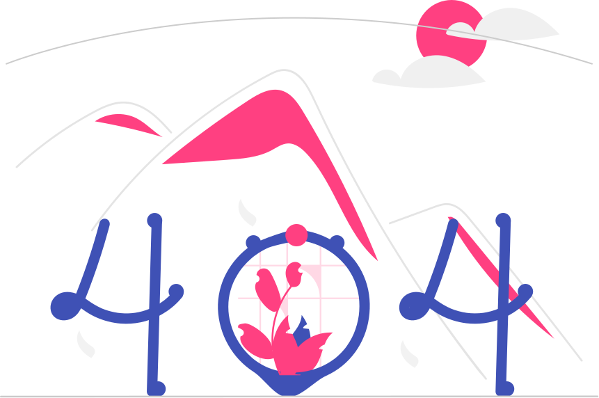

<mat-toolbar color="primary" class="flex spacebetween-center">
    <div class="flex column">
        <p class="main-logo no-margin">Stock<span class="accent">Xpert</span></p>
    </div>
</mat-toolbar>

<div class="page-container flex center-center">
    <div class="flex column gap-1em center-center">
        
        <p class="text-center">Sorry, Page not found!</p>
        <button mat-raised-button color="primary" (click)="location.back()">Go Back</button>
    </div>
</div>